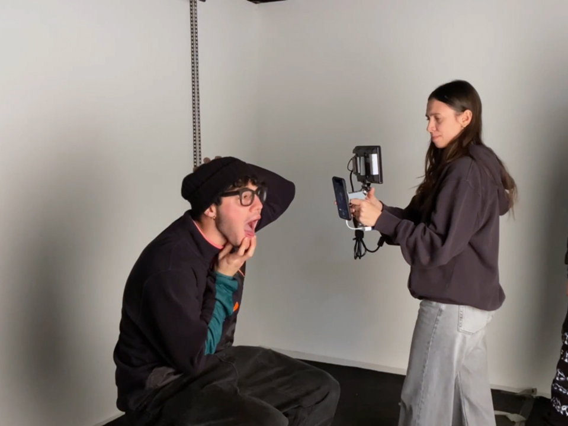
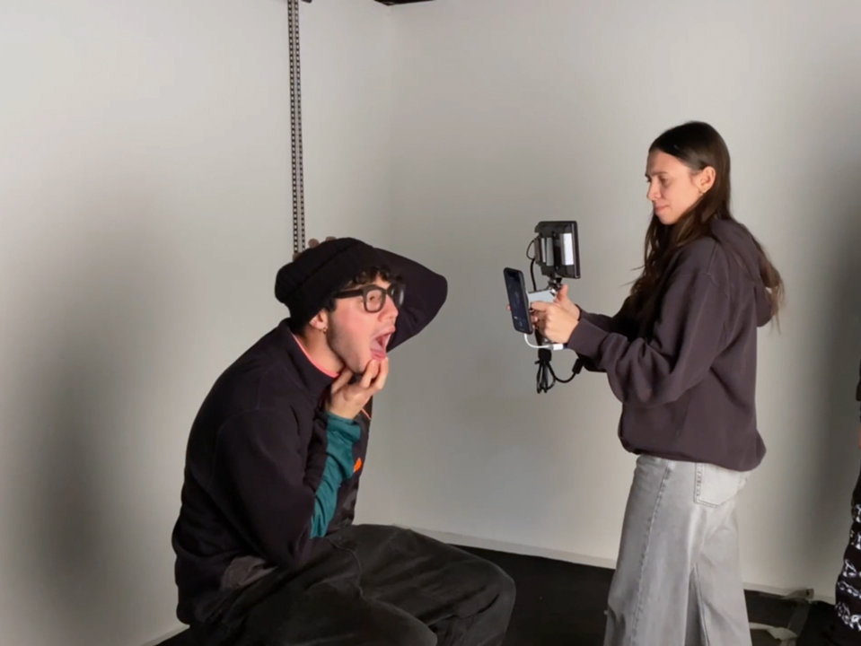
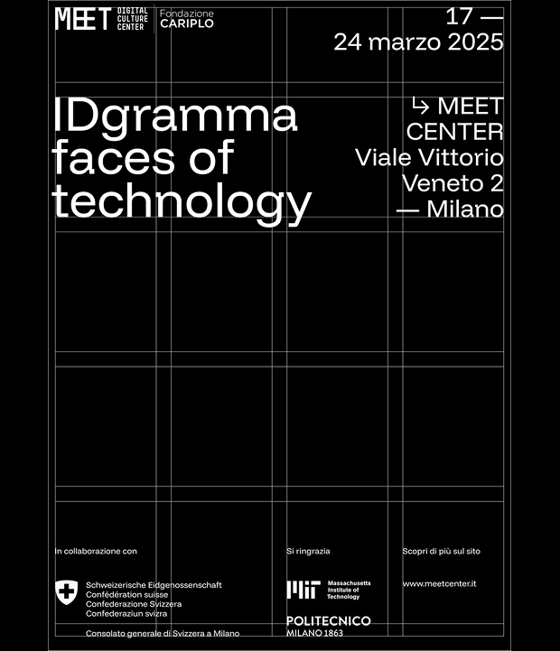
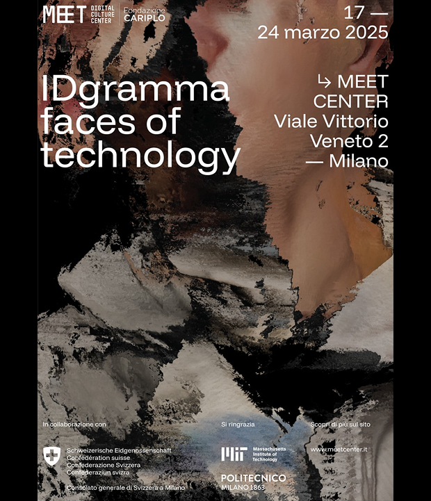
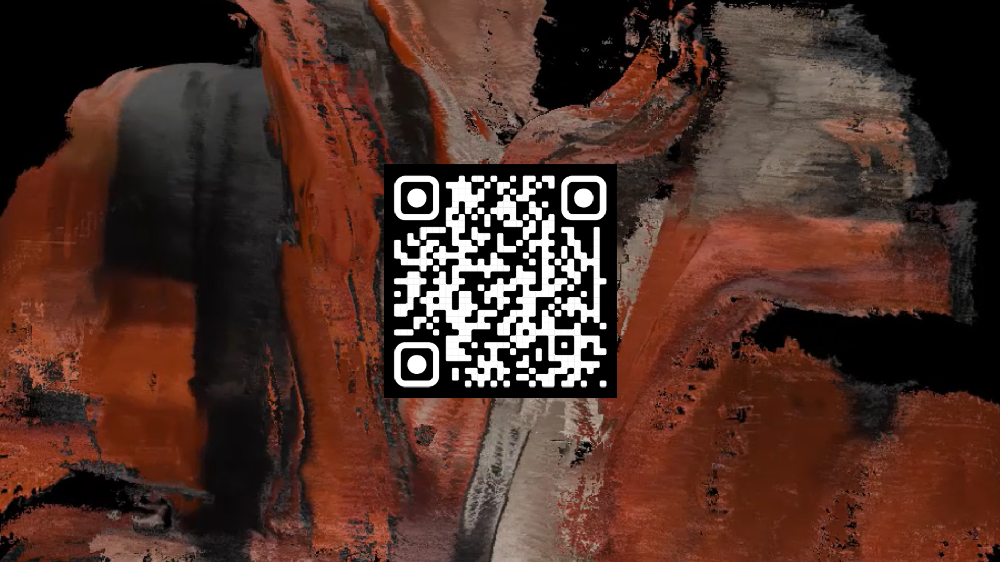

IDgramma is an artistic experimentation project that investigates the relationship between technology, error,
and visual representation.
The project explores how the improper and unconventional use of digital tools can generate new aesthetics and new meanings.
The project is situated within a historical and cultural reflection on glitch art and, more broadly,
on artistic practices that bend technology to their own purposes,
drawing references from xerography, television, 3D modeling, and digital manipulation.
 



The scans give rise to a coherent visual system that defines the project’s identity. Fragmented faces, incomplete surfaces,
and formal glitches construct a language that reflects on the “faces of technology” and its mediation of human identity.


IDgramma is also conceived as an exhibition experience, in which the audience moves through a
sequence ranging from historical contextualization to the scanning of the subject.
The user becomes an active part of the process, shifting from observer to material of the work.

